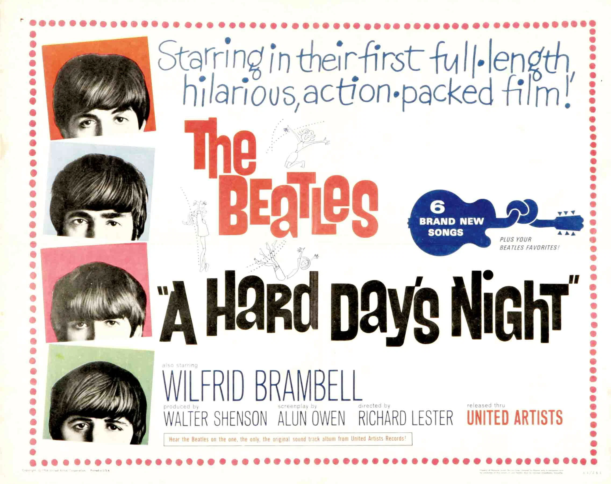
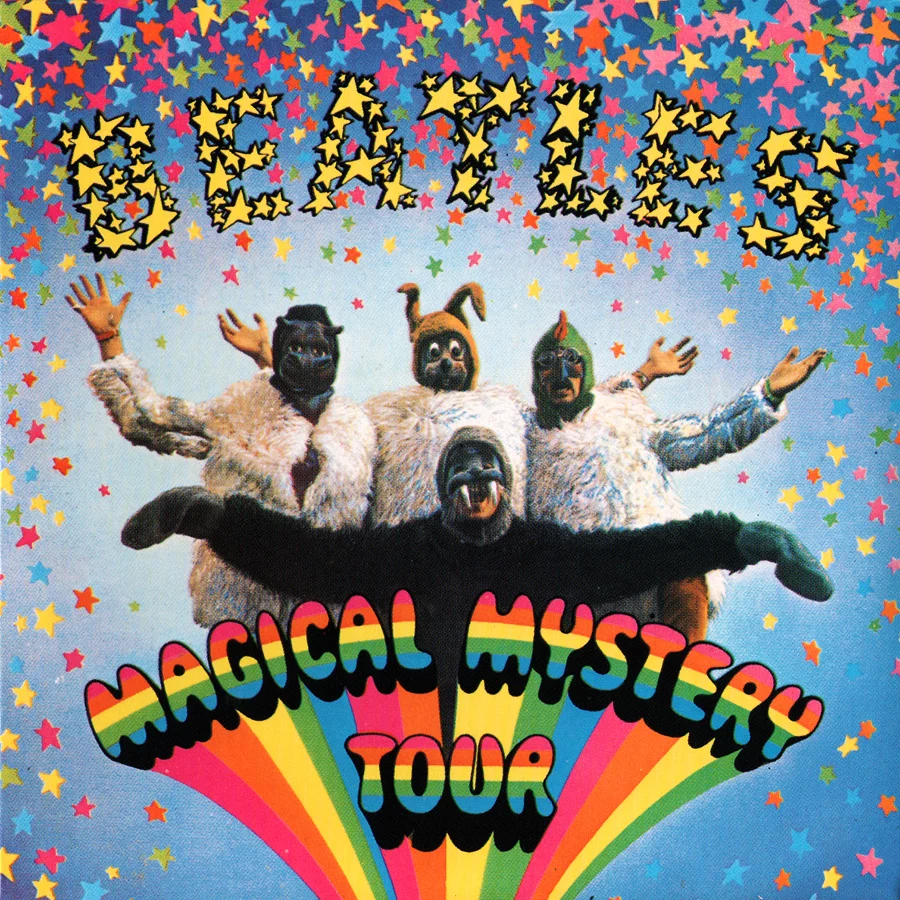
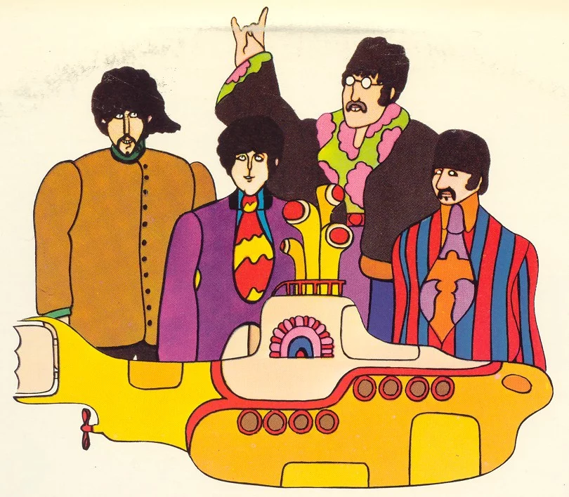

Главная |
Общая информация |
История |
Фильмография|
Дискография |
Источники|
Заказать Альбом|
Контакты |
Фильмография
Год Русское название Оригинальное название
Афиша
Примечание
1964 Вечер трудного дня A Hard Day’s Night  Х/ф
1965 На помощь! Help!

Х/ф
1967 Волшебное таинственное
путешествие Magical Mystery Tour
 Х/ф
1968 Жёлтая подводная лодка Yellow Submarine
 М/ф
1970 Пусть будет так Let It Be
Д/ф